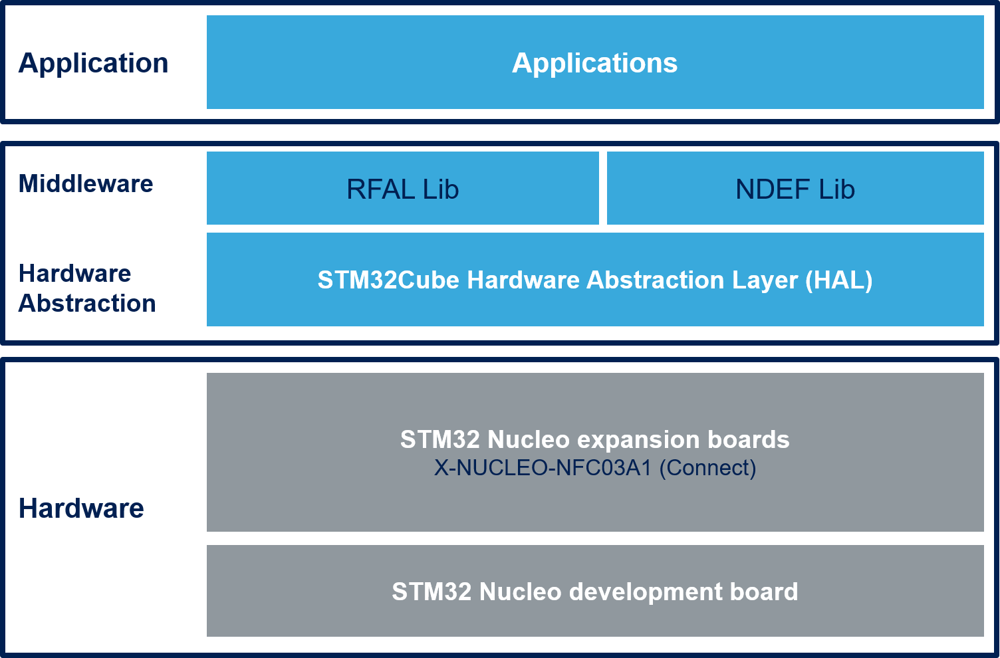

Release Notes for X-CUBE-NFC3
Copyright © 2019 STMicroelectronics
License
This software package is licensed by ST under SLA0077, the “License”; You may not use this component except in compliance with the License. You may obtain a copy of the License at:
SLA0051: SOFTWARE LICENSE AGREEMENT
Purpose
This software is providing NFC capabilities thanks to ST25R95 or CR95HF near field communication transceivers running on STM32. It is built on top of STM32Cube software technology that ease portability across different STM32 microcontrollers.
X-CUBE-NFC3 software features:
Complete middleware to build applications using the ST25R95 or CR95HF near field communication transceivers
Easy portability across different MCU families thanks to STM32Cube
Free user-friendly license terms
The technologies currently supported by RFAL are:
NFC-A ISO14443A (T1T, T2T, T4TA)
NFC-B ISO14443B (T4TB)
NFC-F FeliCa (T3T)
NFC-V ISO15693 (T5T)
ST25TB (ISO14443-2 Type B with proprietary protocol)
Examples implementation available on board X-NUCLEO-NFC03A1 plugged on top of one NUCLEO board
[]
Here is the list of references to user documents:
Update History
Main Changes
- Support of NDEF is added in the Middleware
- An Example is added to Read/Write a NDEF tag
- STM32F4xx drivers aligned to STM32CubeF4 V1.24.1
- STM32L4xx drivers aligned to STM32CubeL4 V1.14.0
Contents
| Name | Version | Release note | CHM |
|---|---|---|---|
| RFAL | V2.1.0 | release note | rfal.chm |
| NDEF | V1.0.4 | ndef.chm |
- ST25R95
Note: in the table above, components highlighted have changed since previous release.
Known Limitations
: Not Any
Development Toolchains and Compilers
- IAR System Workbench v8.40.1
- ARM Keil v5.26
- STM32CubeIDE v1.1.0
Supported Devices and Boards
- NUCLEO-F401RE MB1136 rev.C
- NUCLEO-L476RG MB1136 rev.C
- NUCLEO-F103RB MB1136 rev.C
- X-NUCLEO-NFC03A1
Backward Compatibility
N/A
Dependencies
This software release is compatible with:
- STM32CubeHAL F4 V1.24.1
- STM32CubeHAL L4 V1.14.0
- STM32CubeHAL F1 V1.6.0
Main Changes
- Support of STM32L476RG-Nucleo added
- RFAL library support for ST25R95
Main Changes
- STM32F4xx drivers aligned to STM32CubeF4 V1.21.0
- RFAL library updates
Main Changes
- STM32F1xx drivers aligned to STM32CubeF1 V1.6.0
Main Changes
- STM32F4xx drivers aligned to STM32CubeF4 V1.16.0
Main Changes
- STM32F4xx drivers aligned to STM32CubeF4 V1.13.1
- STM32F1xx drivers aligned to STM32CubeF1 V1.4.0
- Bug fix in lib_iso15693pcd and read text api added to lib_NDEF_Text
Main Changes
- First official release of firmware for X-NUCLEO-NFC03A1 Expansion Board